Стандартные элементы
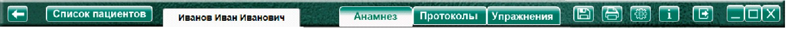
Во время выполнения упражнения, стандартные элементы управления программой становятся не доступны, во избежание случайного нажатия.
Кнопка «Назад» - Возвращает на предыдущую страницу программы.
Кнопка «Список пациентов» - Переход к списку пациентов
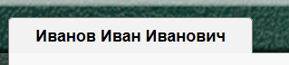
Отображение Ф.И.О. пациента, в личной карте которого находится специалист.Кнопка «Анамнез» - переход к анамнезу данного пациента.
Кнопка «Протоколы» - переход к протоколам методик данного пациента
Кнопка «Упражнения» - переход к списку упражнений.
Кнопка «Сохранить» - открывает меню, для выбора документов, которые нужно сохранить на компьютере.
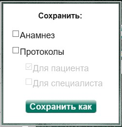
Пункт  Анамнез. При выборе (установке «галочки»
Анамнез. При выборе (установке «галочки»
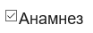
) пункта Анамнез, для сохранения добавляется анамнез пациента.Пункт  Протоколы. Выбор этого пункта добавляет для сохранения выбранные ниже части протоколов:
Протоколы. Выбор этого пункта добавляет для сохранения выбранные ниже части протоколов:
Пункт Для пациента. Выбор этого пункта сохраняет следующие разделы протокола фиксации результатов исследования: «ФИО» испытуемого, «Дата рождения» испытуемого, название методики, «Автор методики (адаптации, модификации)», «Цель» применения методики, «Результат: баллы/вывод об уровне развития» испытуемого, дата и время проведения диагностики, ФИО специалиста, проводившего обследование, примечание);
Пункт  Для специалиста. Выбор этого пункта сохраняет следующие разделы протокола фиксации результатов исследования: «ФИО» испытуемого, «Дата рождения» испытуемого, название методики, «Автор методики (адаптации, модификации)», «Цель» применения методики, «Результат: баллы/вывод об уровне развития» испытуемого, дата и время проведения диагностики, ФИО специалиста, проводившего обследование, примечание, «Процесс выполнения диагностической методики», содержащий применительно к конкретному заданию следующие подразделы: «Факт выполнения», «Время выполнения», «Характер деятельности ребенка», «Виды помощи», «Баллы», описание стимульного материала и работы с ним).
Для специалиста. Выбор этого пункта сохраняет следующие разделы протокола фиксации результатов исследования: «ФИО» испытуемого, «Дата рождения» испытуемого, название методики, «Автор методики (адаптации, модификации)», «Цель» применения методики, «Результат: баллы/вывод об уровне развития» испытуемого, дата и время проведения диагностики, ФИО специалиста, проводившего обследование, примечание, «Процесс выполнения диагностической методики», содержащий применительно к конкретному заданию следующие подразделы: «Факт выполнения», «Время выполнения», «Характер деятельности ребенка», «Виды помощи», «Баллы», описание стимульного материала и работы с ним).
Кнопка «Сохранить как» - открывает окно для выбора имени и места сохранения файла.
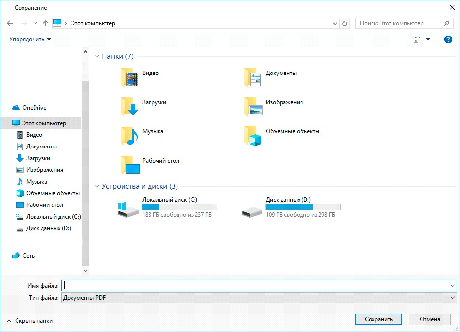
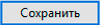
Кнопка «Сохранить» - сохраняет файл в выбранном месте с выбранным названием.
Кнопка «печать»
На страницах упражнений - отправляет на печать (на принтер по умолчанию) стимульный материал упражнения, в котором предусмотрена функция печати.
Если вы видите окно «Сохранение результата печати»
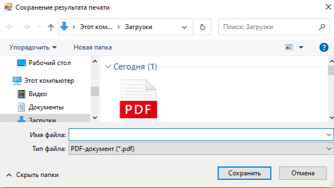
Это означает что принтер не подключен (не включен), или в настройках Windows стоит по умолчанию виртуальный принтер Microsoft. Подключите (включите) принтер или выберите в настройках Windows ваш принтер для настройки по умолчанию.
Кнопка «печать» на страницах «Анамнез» и «Протоколы» - открывает меню, для выбора документов, которые нужно отправить на печать.
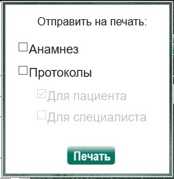
Пункт  Анамнез. При выборе (установке «галочки»
Анамнез. При выборе (установке «галочки»  ) пункта Анамнез, для печати добавляется анамнез пациента.
) пункта Анамнез, для печати добавляется анамнез пациента.
Пункт  Протоколы. Выбор этого пункта добавляет для печати выбранные ниже части протоколов.
Протоколы. Выбор этого пункта добавляет для печати выбранные ниже части протоколов.
Пункт  Для пациента. Выбор этого пункта добавляет для печати следующие разделы протокола фиксации результатов исследования: «ФИО» испытуемого, «Дата рождения» испытуемого, название методики, «Автор методики (адаптации, модификации)», «Цель» применения методики, «Результат: баллы/вывод об уровне развития» испытуемого, дата и время проведения диагностики, ФИО специалиста, проводившего обследование, примечание);
Для пациента. Выбор этого пункта добавляет для печати следующие разделы протокола фиксации результатов исследования: «ФИО» испытуемого, «Дата рождения» испытуемого, название методики, «Автор методики (адаптации, модификации)», «Цель» применения методики, «Результат: баллы/вывод об уровне развития» испытуемого, дата и время проведения диагностики, ФИО специалиста, проводившего обследование, примечание);
Пункт  Для специалиста. Выбор этого пункта добавляет для печати сохраняет следующие разделы протокола фиксации результатов исследования: «ФИО» испытуемого, «Дата рождения» испытуемого, название методики, «Автор методики (адаптации, модификации)», «Цель» применения методики, «Результат: баллы/вывод об уровне развития» испытуемого, дата и время проведения диагностики, ФИО специалиста, проводившего обследование, примечание, «Процесс выполнения диагностической методики», содержащий применительно к конкретному заданию следующие подразделы: «Факт выполнения», «Время выполнения», «Характер деятельности ребенка», «Виды помощи», «Баллы», описание стимульного материала и работы с ним).
Для специалиста. Выбор этого пункта добавляет для печати сохраняет следующие разделы протокола фиксации результатов исследования: «ФИО» испытуемого, «Дата рождения» испытуемого, название методики, «Автор методики (адаптации, модификации)», «Цель» применения методики, «Результат: баллы/вывод об уровне развития» испытуемого, дата и время проведения диагностики, ФИО специалиста, проводившего обследование, примечание, «Процесс выполнения диагностической методики», содержащий применительно к конкретному заданию следующие подразделы: «Факт выполнения», «Время выполнения», «Характер деятельности ребенка», «Виды помощи», «Баллы», описание стимульного материала и работы с ним).
Кнопка «Печать» - Если для печати выбран документ анамнез, то программа открывает его программой (word). Для печати выполните действия, необходимые для установленной версии word, для отправки открытого документа на печать.
Если для печати выбраны протоколы, то для предпросмотра открывается браузер, установленный в системе по умолчанию (для корректного отображения в настройках бразуера должна быть выбрана кодировка Unicode (UTF-8)). В браузере выполните действия, необходимые для вашего браузера, для отправки документа на печать.
Кнопка «Загрузить» - для загрузки документов. После распечатки стимульного материала и выполнения задания (например, рисования или раскрашивания) можно отсканировать выполненное задание и сохранить отсканированное изображение в любую папку на пк. На странице упражнения выполняемого упражнения нажать кнопку «Загрузить файл», найти и сохранить рисунок.
 Кнопка «Настройки» - открывает доступ к настройкам, доступным для данной страницы.
Кнопка «Настройки» - открывает доступ к настройкам, доступным для данной страницы.
Кнопка «Информация» - предоставляет доступ к руководству пользователя и информации о программе»
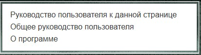
«Руководство пользователя к данной странице» открывает окно содержащее информацию из руководства пользователя к странице программы, открытой в данный момент.
«Общее руководство пользователя» - открывает окно содержащее руководство пользователя на странице оглавления.
«О программе» – показывает информацию о программе (название и номер версии)
Кнопка «Выход» - выход зарегистрированного пользователя из программы
Стандартные кнопки управления окном windows.
Кнопка «Свернуть» - убирает окно с экрана, но не закрывает его. Приложение при этом продолжает работать в фоновом режиме.
Кнопка «Развернуть/востановить» - устанавливает максимальный (полноэкранный) размер окна/возвращает прежние размеры (открывая панель задачь windows).
Кнопка «Закрыть» - закрывает программу.
Элементы управления на странице упражнений.
Кнопка «Начать упражнение» - запускает секундомер и открывает упражнение на весь экран.
Кнопка «Стоп» - останавливат секундомер, открывает поле оценки результата.
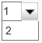
Выпадающее меню выбора задания. В некоторых упражнениях несколько заданий. Данное меню предназначено для выбора нужного.Кнопки «Вперед» / «Назад» так же, как и выпадающее меню выбора задания, предназначены для перемещения между заданиями.
Поле оценки результата
Заголовки раскрывающихся меню:
Методика «Название методики» (автор методики) описание
Процедура проведения.
Анализируемые показатели и нормативы выполнения
При нажатии левой кнопкой мыши открывается информация, содержащаяся в данных пунктах.
Методика «Название методики» (автор методики) описание
Процедура проведения. – информация о процедуре проведения данной методики.
Анализируемые показатели и нормативы выполнения – информация об анализируемых показателях и нормативах выполнения данной методики.
Оценка результатов
Пункты с чекбоксами (checkbox)
«Характер деятельности ребенка» и «Виды возможной помощи»
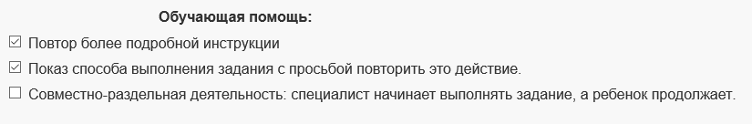
При выборе (установки «галочки» при помощи клика левой кнопкой мыши) одного или нескольких пунктов, они добавляются в протокол фиксации результатов исследования.
Помимо представленных пунктов в данных разделах, специалист может внести свои непосредственно в протокол.
Пункты с «радиокнопками» (radiobutton)
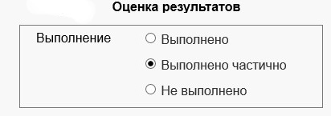
В данной категории можно выбрать только один пункт из группы. Выбранные данные учитываются при автоматическом заполнении протокола.
Кнопка «Сформировать протокол».
После выполнения упражнения, специалист выбирает возраст (там, где это учитывается), выполнение (там, где факт выполнения может оценить только специалист), а также при необходимости характер деятельности ребенка и виды возможной помощи, и нажатием на кнопку «Сформировать протокол» заносит выбранные данные в протокол фиксации результатов исследования.
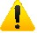
В упражнениях, где заданий несколько, вначале обязательно сформировать протокол по выполненному заданию, и только затем переходить к выполнению следующего!